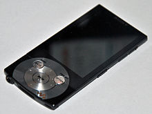

Informations sur le(s) créateur(s):
Eiger Labs est une société américaine spécialiste de la conception de baladeurs numériques et autres appareils informatiques.
Informations sur la machine:
Les baladeurs audio numériques peuvent restituer de l'audio (musique, voix, etc) ou de la vidéo grâce à un écran situé la plupart du temps en haut de l'appareil. Ils sont communément appelés « baladeurs MP3 » ou parfois même simplement « MP3 », en référence au format très commun de fichier informatique permettant de stocker du son, le MP3. Plus rarement, ils peuvent aussi être appelés « Jukebox MP3 ».